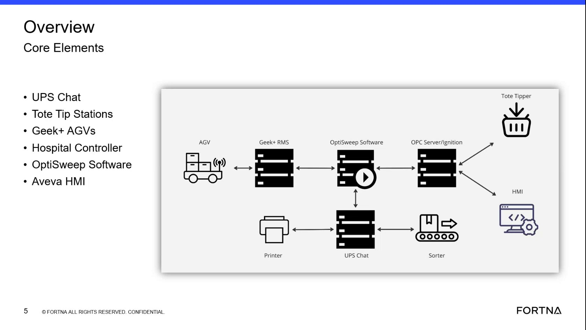

| Procedure ID | proc_identify_aveva_as_the_hmi_platform_used_in_ups_buildings_v1 |
|---|---|
| Title | Identify Aveva As The HMI Platform Used In UPS Buildings |
| Procedure Type | reference |
| Primary Role | operator |
| Support Safe | Yes |
| Validation Status | needs_sme_review |
| Merge Status | source_finalized |
Use the referenced training slide and transcript segment to verify that the source identifies Aveva as the HMI platform used in UPS buildings. This runbook is limited to source-backed platform identification and does not provide HMI operating instructions.
Use when you need to confirm, from this training source only, which HMI platform is named for the described UPS building environment.
Responsible role: operator
Instruction:
Open the overview training slide for the cited segment and locate the label for Aveva HMI in the architecture diagram.
Expected result:
The overview slide visibly includes an Aveva HMI label among the core system elements.
Screens / Images:

Stop or Escalate If:
Responsible role: operator
Instruction:
Review the transcript or evidence summary for the cited segment and confirm that it states UPS in all their buildings uses Aveva for HMIs.
Expected result:
The transcript evidence explicitly states that UPS in all their buildings uses Aveva for HMIs.
Stop or Escalate If:
Responsible role: operator
Instruction:
Record Aveva as the HMI platform named in this source segment.
Expected result:
Aveva is documented as the HMI platform identified by this training source segment.
Screens / Images:
Stop or Escalate If:
Responsible role: operator
Instruction:
Use this identification only as a source-backed platform reference and do not infer specific HMI screens, controls, or navigation paths from this segment.
Expected result:
The result is used only to identify the platform and not as an operating procedure.
Stop or Escalate If: